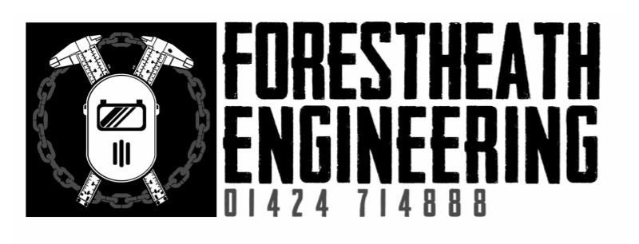
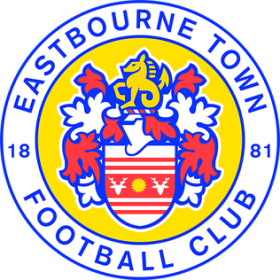
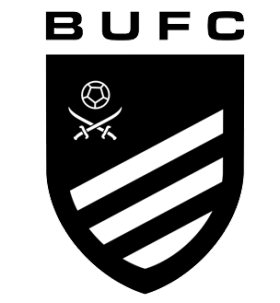

Drag & Drop Website BuilderWe will be playing 35 minutes each way today, and obviously there must be a winner as it is a Cup Final.
So if the score at the end of normal time is level, extra time of 10 minutes each way will be played.
If the match is still level at the end of extra time then the outcome will be decided by the taking of penalty kicks, in accordance with the Laws of the game.
At the end of the game the match officials will receive a small memento to thank them for their efforts. Trophies are then given out to the runners-up, followed by the winners.
The Rules of the Rother Youth Football League allow for ‘roll-on, roll-off’ substitutions. This means that a player who has been substituted becomes a substitute himself and can come back on again at a later stage in the game.
Ethan Green. goalkeeper. Fantastic shot stopper and communicator
Henry Murray. Left back. Mr reliable. Modern day Stuart Pearce.
Roman Gorridge. Right back. Cool calm and collected on the ball but still loves a tackle.
Evan Auer. Centre back. New signing and a great debut season. Strong, quick and hard to play against.
Ethan Loosely. Centre Back. No messing defender
And great in 1v1 situations
Harley Jamison. Centre mid. A talented football with great passing distribution. Important player for us
Jakey chanter. Centre mid. Hard working player. Great feet and a eye for goal
Monty Gudgeon. Centre mid. Great to have Monty back. Great technical player who can make things happen.
Sam young. Midfielder. Can play anywhere in midfield. Very versatile and can carry the ball.
Stanley Adams. Winger. New signing. Great addition to the squad. Skillful player and great finishing ability.
Max Beaumont. Winger/striker. Hard working and full of tenacity. Great eye for goal. Can finish anywhere
Frankie -Shields-Pain Left wing. Skillful trickster, loves to take on players and dribbling. Wand of a left foot.
Franklin Wright Right Wing. Old school direct winger. Loves taking on he's man and crossing. Great engine, contributes to many assists.
Gabriel Lowe. Forward/defender. Can play anywhere on the pitch. Strong quick and powerful. A handful for any defender or attacker. Very valuable player.
Romario Russel Striker. Strong classic centre forward. Can hold up play and make things happen. Scores many goals for us.
Isaac Narine. Striker Left foot power house of a player. Can change the game at any moment. Scored so many goals this season. Important player for us.
Joseph Cornelius.Striker struggled with injuries this season but when fit can be an excellent player for us. Links up well and has top class poaching finish.
Another season comes to an end, our 8th successive season together. After last seasons success we've had high ambitions this season but unfortunately have come up short. Another summer of players coming and going has made it challenging at times. However we're immensely proud of this group of lads who have all stuck together through the tough times and have managed to get themselves to a final. Nothing more than what they deserve. We're looking forward to what should be a great game of football and we wish our opponents the best of luck. Thank you to all the continued support from The parents, the boys are very lucky to have such a positive and supportive group of parents.
Pass+move Green
TEAM COLOURS:
Grey/Fluro green
CUP FINAL SQUAD:
Ethan Green
Ethan Loosely
Henry Murray
Roman Gorridge
Evan Auer
Harley Jamison
Jakey Chantler
Monty Gudgeon
Franklin Wright
Stanley Adams
Frankie shield pain
Max beaumont
Sam young
Romario Russel
Gabriel Lowe
Isaac Narine
TEAM MANAGERS:
Grant Murray
Sam Jamison
Jonjo Wright
Toby Green

Proud Sponsors of the
Rother Youth Football League!

The Saffrons, Eastbourne

The Polegrove, Bexhill-on-Sea
The Pilot Field, Hastings
Drag & Drop Website Builder